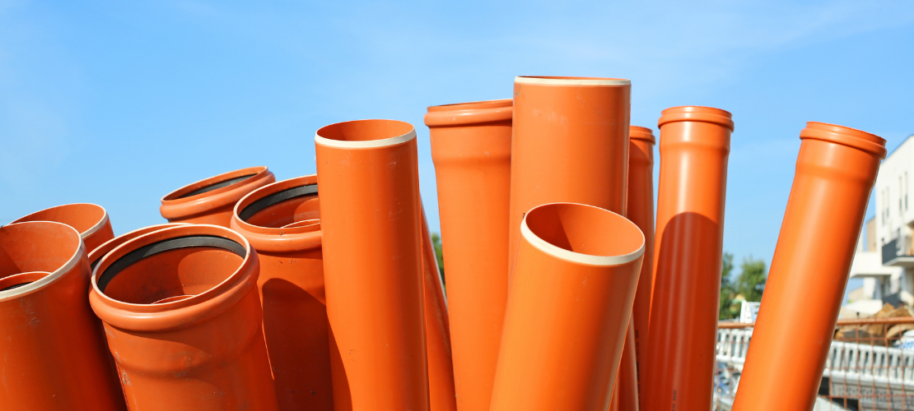
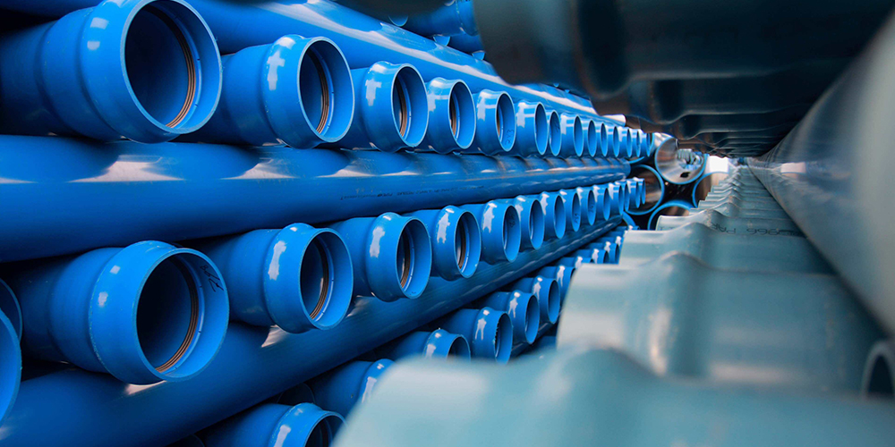
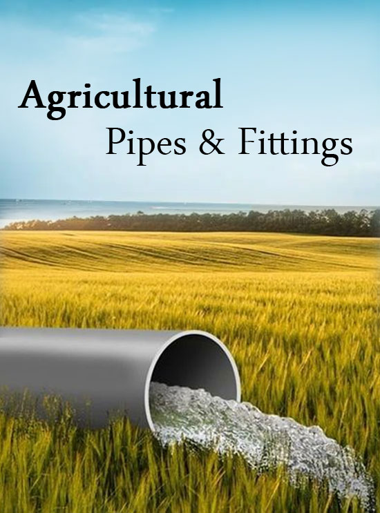

SWR Pipes and Fittings
A Complete Guide - Soil, Waste and Stormwater (SWR) systems are an essential part of construction today,
enabling the management of wastewater and water. In this comprehensive guide, we will take a closer look at
the importance of SWR pipes and fittings, their different uses and their important role in maintaining a
healthy environment and cleanliness in buildings.
Learn about SWR pipes and fittings:
1. Product composition:
SWR pipes are generally made of quality materials such as PVC or UPVC for durability and corrosion
resistance. This information ensures the long life of the SWR system.
2. Smooth inner surface: SWR pipe has a smooth inner surface that facilitates waste and
storm flow. This smoothness reduces the likelihood of clogging and improves the overall performance of the
system.
3. DURABILITY AND STRENGTH:
SWR tubing is designed to withstand the rigors of daily use. Their strength and durability make them
suitable for transporting waste and rainwater without the risk of cracking or breaking.
Use of SWR Pipes:
Waste:SWR Pipes are important for the safety and transportation of domestic and commercial
waste. Thanks to its central structure and durability, it is ensured that waste material is not transported
from different parts of the building.
Stormwater Drainage: The "R" in SWR stands for stormwater drainage and refers to the role of
stormwater drainage. SWR pipes collect rainwater and flow through the building, preventing leaks and damage.
Air Sources: SWR systems generally include air exhaust systems that release gas into liquid. Proper
ventilation will help prevent bad odors and maintain the cleanliness of the house.
Suggested Blogs

UPVC Pipes
Unplasticized polyvinyl chloride, commonly
known as
UPVC, has become a popular choice for domestic plumbing Its unique

Agri Pipes
In a dynamic agricultural world where
resource use is important, agricultural pipes and fittings play an
Commercial and commercial: SWR systems are not limited to residential buildings; They are equally
important in business and industry. These machines are very efficient in terms of waste and rainwater and
increase the cleanliness and safety of all areas.
Get a healthy and clean environment:
1. Prevention of waterborne diseases: Effective waste disposal with SWR system helps prevent water
stagnation and reduce the risk of waterborne diseases. Proper drainage and waste management contribute to a
healthy home or workplace.
2. Odor Control: The inclusion of vents in the SWR system helps control and eliminate odors that may
be present in your water. This is important to ensure a comfortable and hygienic environment at home.
3. Flood Prevention: SWR systems play an important role in preventing floods in homes by diverting
rainwater from foundations and structures. This helps maintain the structural integrity of the building over
time.
4. Building Code Compliance: SWR systems are designed to meet and exceed codes and standards.
Ensuring compliance with these regulations is important for the safety and health of building occupants and
the longevity of the building.
In summary, SWR pipes and fittings are an important part of the modern water system and solve
important problems related to disposal and stormwater management. Their durability, efficient design and
contribution to a healthy and clean environment make them the best choice for builders, architects and
homeowners. As we continue to place emphasis on a sustainable and safe environment, the role of SWR systems
in promoting cleanliness and environmental responsibility has become more important.
Author:-Aman Kumar
Issue Date:-29/12/2023